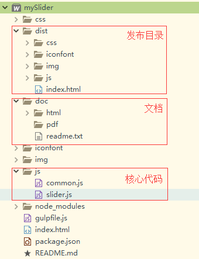
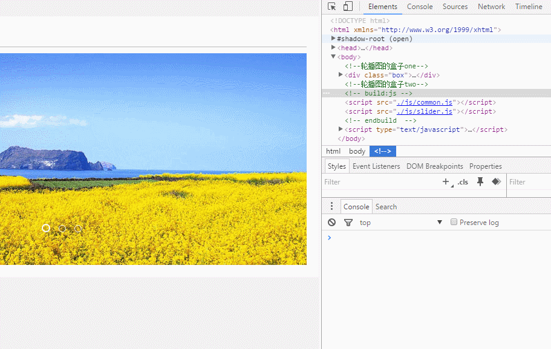

@尹行欣
2016-04-17 19:04
字数 2262
阅读 0
轮播图
一、摘要
二、简介
轮播图组件，支持左右轮播和淡入淡出两种效果，同一个页面可以出现多个slider。不依赖其他第三方JS库，原生开发，使用方便。建议使用Google浏览器浏览(因时间原因，未能充分做兼容性测试)。
1、轮播

2、淡入淡出
3、支持选项
- slideEffect : 'slide'|'fadeout'，轮播效果，左右轮播或者淡入淡出
- autoSlide : true|false，是否自动轮播
- slideInterval: 1000 ，自动轮播的时间间隔ms
4、支持方法
- setActiveSlide(slide)，将slide设置为当前；
- sliderWillSlide(now, next)，将要slide的时候调用，传递参数：当前slide，将要出现的slide
- sliderDidSlide(now, prev)，slide结束的时候触发，传递参数：当前slide，上一个slide
三、开发流程
- 编写轮播图CSS样式，包括CSS3动画的移动和淡入淡出效果。
- 编写JavaScript核心代码，包括common.js和myslider.js。
- 使用gulp前端构建工具打包发布工程。
- 编写开发文档。
四、主要模块
- 仿jQuery模块，提供工具函数（common.js）
- 轮播图核心模块（myslider.js）
五、目录结构

六、接口文档
Slider类
Slider类图|||----成员变量| || |--active -- 用于记录当前轮播图位置|||--items -- 轮播图Dom对象的数组||--next -- 轮播图后退按钮||--prev -- 轮播图前进按钮||--lis -- 轮播图控制按钮|||--context -- 构造入参数:轮播图对应的上下文环境||--options -- 构造入参数:轮播图配置项||--autoSlide -- 轮播图配置项 :是否自动轮播(false|true)||--slideInterval -- 轮播图配置项 :轮播间隔(ms)||--sliderEffect -- 轮播图配置项 :轮播效果(slide|fadeout)|||--timer -- 轮播图内部使用,用于记录定时器ID||--clickName -- 轮播图内部使用,用于区分按钮点击类型|||----成员方法| || |--constructor(context, options) -- 轮播图构造函数,入参:轮播图Dom对象和配置项options|||--setActiveSlide(slider) -- 设置slider为当前轮播图||--sliderWillSlide(now, next) -- 轮播图事件监听,轮播图开始轮播时触发||--sliderDidSlide(now, prev) -- 轮播图事件监听,轮播图结束轮播时触发|||--getActiveSlideIndex() -- 轮播图内部使用,获取当前轮播图索引||--getSlideByIndex(index) -- 轮播图内部使用,根据索引获取轮播图的Dom对象||--getSlideLength() -- 轮播图内部使用,轮播图的长度|||--on(type, callback) -- 轮播图内部使用,用于注册事件||--trigger(type) -- 轮播图内部使用,用于触发事件
DOM类(仿jQuery)
DOM类图|--each(obj) -- 静态方法,遍历元素或数组||----prototype对象 -- 实现jQuery的部分功能||--addClass() -- 给Dom元素添加类名||--removeClass() -- 给Dom元素移除类名||--hasClass() -- 判断Dom元素是否拥有类名|||--getEvent(event) -- 获取事件对象||--addHandler(type,handler) -- 给Dom元素绑定事件||--removeHandler(type,handler) -- 取消Dom元素事件||--preventDefault(event) -- 阻止默认事件||--stopPropagation(event) -- 停止冒泡
Event监听事件
var slideDiv = DOM("#slider1").dom[0];var slider = new Slider(slideDiv, {"sliderEffect": "slide","autoSlide": false,"slideInterval": 2000});// 注意 now,next,prev都为dom对象,xxx.index表示改轮播图的下标索引slider.on('willslide', function (now, next) {console.info('slider now:' + now.index + ' next:' + next.index);});slider.on('didslide', function (now, prev) {console.info('slider now:' + now.index + ' prev:' + prev.index);});

七、后续开发
- 模块之间通过require加载。
- CSS通过Less等css编译工具编译完成。
- 没有编写媒体查询相关的CSS3代码，移动端适配的功能有待完善和开发。
八、总结
限于时间原因，不能更多的书写详细的文档，还希望各位大神拜读源码了。